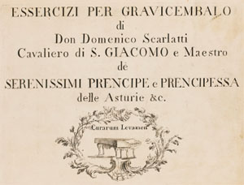
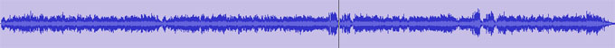
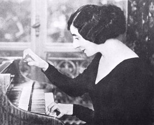

Scarlatti est le patronyme d'une famille de musiciens, étalée sur plusieurs générations. Alessandro (1660-1725) a fondé l'école napolitaine d'opéra (Telemaco, Sedecia, Re Di Gerusalemme) et il s'est illustré en musique sacrée (Beaux oratorios, Maddalena Part 1 & Part 2 et Il Martirio di Santa Cecilia Part 1 & Part 2). Domenico (1685-1757) fut son fils le plus doué, tandis que l'aîné, Pietro Filippo (1679-1750) est resté dans l'ombre (Toccata poussive, de plus mal servie par un clavecin(iste) anémique). Quant au neveu de Domenico, Giuseppe (1723-1777) (Dove è Amore è Gelosia), il n'a guère fait preuve d'originalité.
La carrière de Domenico s'est déroulée en deux temps parfaitement contrastés :
Il a beaucoup voyagé en Italie pendant sa jeunesse - Naples, Rome, Florence, Venise - composant essentiellement des opéras (Ottavia Restituita al Trono) et des oeuvres religieuses (Stabat Mater, Missa Breve "La Stella") ... comme son père, ce qui ne fut peut-être pas une bonne idée. Le fait est qu'il n'y gagna pas la renommée escomptée.
Cette reconnaissance, il ne la trouva que tardivement, à partir de 1720, lorsqu'il se mit au service de Marie Barbara de Bragance, princesse portugaise appelée au trône d'Espagne, en 1729, lors de son mariage avec Ferdinand VI. C'est pour elle que Scarlatti a écrit ses 555 Sonates et, vu leur difficulté, on imagine qu'elle devait être une claveciniste virtuose; en tous cas aucun commentaire désobligeant ne nous est parvenu !

Exercices plutôt que Sonates
Ces oeuvres, réservées à un usage royal, n'ont pour l'essentiel pas été publiées du vivant de leur auteur, sauf 30 d'entre elles, parues à Londres, en 1738. Le titre générique du recueil parle d'Essercizi et non de Sonates : dans l'esprit de Scarlatti, chaque pièce illustrait, en effet, un point particulier de technique interprétative. Les 525 autres partitions autographes ont disparu et les musiques ne nous sont parvenues que grâce à des copies manuscrites, propriétés de la reine. Au décès de celle-ci, elles déménagèrent en Italie, amenées par le castrat Farinelli qui en avait officiellement hérité.
Le nombre 555 est sans doute approximatif mais c'est celui que tout le monde retient. Plusieurs musicologues - essentiellement Alessandro Longo et Ralph Kirkpatrick - se sont penchés sur leur numérotation, au sein d'un catalogue cohérent. Aujourd'hui, celle, approximativement chronologique, de Kirkpatrick fait l'unanimité et, pour s'y retrouver, les nostalgiques de vieux enregistrements ont besoin d'une table de conversion des n° L vers les K. Les sonates référencés de K 1 à K 30 sont précisément les fameux Essercizi mais il est établi que ces oeuvres n'ont pas été composées en premier.
Note informatique à l'usage des débutants vite désemparés : il ne vous aura pas échappé que la table de conversion mentionnée est ordonnée selon les n° K croissants, ce qui est de peu d'utilité pour tous ceux qui, en présence d'un enregistrement ancien, désirent retrouver le n° K quand ils ne connaissent que le L. En actionnant simultanément les touches CTRL et F de votre clavier vous faites apparaître, dans le coin supérieur droit de l'écran, une fenêtre où vous inscrivez le n° L en question. Une recherche s'effectuera automatiquement, dans la page active, trouvant toutes les occurrences de la chaîne des caractères tapés. Passez-les en revue, en actionnant la flèche descendante située à droite de la fenêtre, jusqu'à tomber sur la bonne inscription dans la 2ème colonne. Le n° K cherché se trouve en regard dans la 1ière colonne.

Phonogramme de la Sonate K 526
En fait de sonates, elles sont d'une coupe singulière, sans aucun rapport avec celle de la sonate classique. Ecrites en un seul mouvement de forme binaire (de type AB(AB)), mono ou bi-thématiques, elles proposent une variété étonnante de formules mélodiques souvent répétitives, de dissonances, de modulations inattendues, de rythmes brisés et de ritournelles irrésistibles nourries du répertoire populaire de la péninsule ibérique (Dernière section de la Sonate K 526, ritournelle finale comprise ). Des pauses, subtilement insérées à l'improviste, concourent à des effets de contrastes particulièrement attractifs (les procédés stylistiques du Flamenco ne sont pas si éloignés). Les tempi affichés se réduisent souvent aux mentions allegro et presto et il a fallu attendre les dernières sonates pour qu'apparaissent des nuances, con spirito, allegretto, andante ... .
Quel instrument ?

Wanda Landowska
Question étrange, penserez-vous, puisque l'édition des Essercizi mentionne explicitement le clavecin. D'aucuns n'excluent cependant pas que les dernières oeuvres du Maître aient pu être confiées ad libitum au clavicorde vu que la reine en possédait plusieurs. Mentionnons, à l'appui possible de cette thèse, que l'éventail des notes utilisées par Scarlatti n'a cessé d'augmenter : plusieurs demi-tons au cours des 15 dernières années, ce qui supposait soit l'élargissemment du clavier soit l'adoption du clavicorde.
Après une période d'oubli (relatif, Chopin connaissait et appréciait l'oeuvre de Scarlatti), le 20ème siècle a redécouvert ces sonates sous les doigts experts de la claveciniste Wanda Landowska (1879-1959). Elle fut la première référence "moderne" et elle le reste à bien des égards, seule la qualité sonore de ses enregistrements pouvant faire douter (Sonates L 102, L 104, L 255). Depuis cette époque héroïque des enregistrements de studio, beaucoup d'interprètes ont repris le flambeau, se heurtant inévitablement au problème posé par la qualité de l'instrument.
Scott Ross, décédé à 38 ans seulement, a trouvé le temps de graver la meilleure intégrale disponible (Sonates K 1 à 19, K 20 à 30, K 31 à 48, fouillez, vous trouverez les autres sur la toile !). Elle est sans défaut, un peu sage à mon goût mais l'instrument est bon. D'autres intégrales existent sur le marché (Richard Lester, sur un clavecin astringent chez Nimbus, Ottavio Dantone, sur un clavecin un rien brouillon chez Stradivarius, Pieter-Jan Belder sur un clavecin convenable chez Brillant) mais pourquoi chercher si loin puisque l'intégrale de Scott Ross est bradée à 130 euros, ce qui met la sonate à 23 euro cents, TVAC.
Aujourd'hui, le piano moderne concurrence sérieusement le clavecin. Insensible aux problèmes de facture qui plombe le timbre, il apporte une sonorité ample seulement menacée par le risque de perdre l'articulation des notes piquées. Beaucoup de pianistes ont relevé le défi et quelques-uns ont réussi au-delà de toute espérance. A tout seigneur tout honneur, qui pourrait surpasser Murray Perahia dans ce répertoire (K 491, 29) ? Quel dommage qu'il ait enregistré si peu de sonates ! D'autres pianistes ont également tiré leur épingle du jeu (quelques interprétations particulièrement plaisantes sont mises en évidence à l'usage des lecteurs pressés) :
Nikolai Demidenko (K 518) possède un toucher particulièrement idiomatique,
Maria Tipo (K 32, K 547), impeccable comme toujours,
Avec son toucher si particulier Glenn Gould devait réussir de belles choses dans Scarlatti et, de fait, écoutez comment il interprète les sonates, K 9, K 430 & 13.
L'intégrale Naxos est satisfaisante en dépit du fait qu'elle ait été confiée à plusieurs pianistes aux styles assez différents.
De très grands pianistes ont de tous temps mis des sonates de Scarlatti au programme de leurs concerts (éventuellement en bis) : Wladimir Horowitz (K 33, 54, 525, 146, 96, 162, 474, 198, 491, 481, 39) a tôt montré la voie et Martha Argerich a fait des merveilles dans cette sonate K 141.
Les sonates (lentes ?) de Scarlatti se laissent volontiers transcrire pour l'hispanique guitare mais les témoignages disponibles semble indiquer qu'il est difficile de préserver la volubilité requise (John Williams : K 380 et surtout Stephen Marchionda et Gérard Abiton : K 466, K 208).
On peut en dire autant de la harpe (Maria Luisa Rayan-Forero : K 466 & 380, Constance Luzzati : K 9).
Etonnamment, l'accordéon se débrouille fort bien, surtout lorsqu'il est joué avec le tact, le bon goût et la virtuosité qui caractérisent le jeu de Mie Miki (K 427).
L'oeuvre pour clavier de Scarlatti ne ressemble à aucune autre : prisonnier d'un isolement consenti, il a élaboré un style personnel très vite admiré un peu partout en Europe et rarement imité. C'est au fond en rompant avec les repères paternels que le fils a trouvé sa véritable voie, Alessandro n'ayant jamais vraiment brillé au clavier. Domenico Scarlatti n'a connu qu'un seul rival en audace et extravagance, le facteur Azzolino Bernardino della Ciaja (1671-1755), un musicien étonnant qu'on tarde à redécouvrir (Sonate opus 4 n°3, Toccata 3). Il n'a également connu qu'un seul élève digne de lui, le Padre Antonio Soler (1729-1783), à qui il a inspiré des sonates qui pêchent dans les mêmes eaux (Sonates, toutes enregistrées en 15 volumes chez Naxos, sans oublier le célèbre Fandango que vous réécouterez si possible sous les doigts d'Andreas Staier).